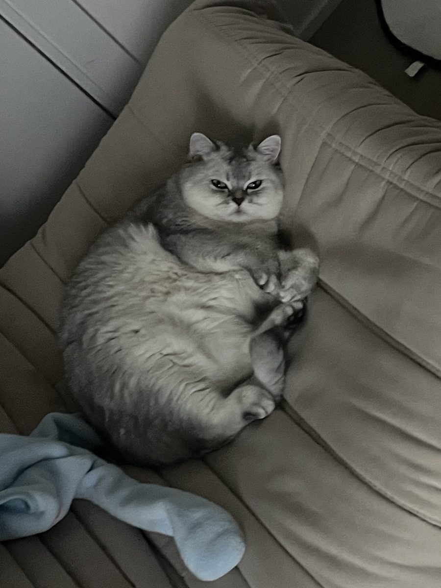

About Me

I am Zhengbang Zhou, a Ph.D. candidate in theoretical condensed matter physics at the University of Toronto, working with Prof. Yong-Baek Kim. My research focuses on frustrated spin systems and other strongly correlated electron systems using various computational methods.
Research Focus
Beyond mean-field theory, I employ computational techniques—including exact diagonalization, quantum Monte Carlo, and numerical linked-cluster expansions—to investigate quantum many-body systems. In particular, I focus on computing dynamical properties and entanglement characteristics in strongly correlated regimes. I also implement Markov Chain Monte Carlo methods for classical spin systems and leverage CUDA acceleration for large-scale Landau–Lifshitz dynamics.
Tensor networks & DMRG
Exact diagonalization is limited to a few dozen spins, so I am building out a matrix-product-state toolchain to reach the sizes where frustrated phases actually live. This covers two-site variational DMRG for ground and low-lying excited states, frequency-domain dynamical DMRG on purified thermal states for finite-temperature spectral functions—which avoids the error accumulation of real-time evolution and parallelizes trivially over frequency—and infinite PEPS optimized by automatic differentiation for genuinely two-dimensional lattices.
Neural quantum states
In two dimensions, entanglement scaling eventually defeats tensor networks. I am therefore working with variational neural quantum states: group-equivariant CNNs and vision-transformer ansätze that encode the full lattice space group, optimized with MinSR—the kernel-trick reformulation of stochastic reconfiguration—and benchmarked against exact diagonalization. The target problems are frustrated J₁–J₂ models and chiral-spin-liquid candidates on the triangular lattice, where competing numerical methods still disagree on whether the spin liquid is real.
Methods & Code
Most of my numerics are written from scratch and released openly, both to keep the results reproducible and to keep the algorithms honest—every solver below is validated against exact diagonalization or an analytic limit.
Quantum many-body solvers
My main workhorse: a C++17 / CUDA / MPI engine with first-class Python bindings. Ground states and low-lying spectra via Lanczos, block Lanczos and Krylov–Schur; finite-temperature thermodynamics via FTLM, LTLM, OFTLM, mTPQ and KPM; static and dynamical structure factors S(Q,ω,T). The symmetry engine handles U(1) Sz and Sz parity, spatial groups, global spin flip, time reversal, and full non-abelian point-group irreps through a factorized little-group construction, with matrix-free representative walks at scale. Runs on OpenMP, a single GPU (cuBLAS / cuSPARSE), or multi-rank MPI with multi-GPU NCCL.
Numerical linked-cluster expansion for pyrochlore and triangular spin-½ models: cluster generation from canonical graph certificates, embedding multiplicities, weighted subtraction and resummation, with every cluster diagonalization delegated to QED.
Matrix product state / MPO library with a symbolic finite-state-machine MPO builder, two-site variational sweeps on a ramped bond-dimension schedule, and Schmidt-spectrum and entanglement-Hamiltonian diagnostics.
Finite-temperature spectral functions by purification plus frequency-domain dynamical DMRG, on a symmetry-resolved block-sparse tensor engine. No error accumulates along a time axis, and the frequency grid parallelizes perfectly.
Neural quantum states for spin-½ lattice models: group-equivariant CNNs over the full space group and vision-transformer ansätze, optimized with MinSR stochastic reconfiguration and vectorized Metropolis sampling.
Infinite projected entangled-pair states with CTMRG contraction, stable SVD primitives with regularized backward passes, and variational optimization through automatic differentiation.
Two engines behind one dependency-free C++20 core: stochastic series expansion for the bipartite Heisenberg model and BSS determinant QMC for the Hubbard model, with binning analysis and jackknife error propagation.
Classical spin dynamics
A C++20 / CUDA framework for classical spin systems, covering the whole path from ground state to spectroscopy: simulated annealing, MPI parallel tempering, Landau–Lifshitz molecular dynamics, and pump–probe and two-dimensional coherent spectroscopy. Lattices include honeycomb (BCAO, Kitaev), pyrochlore, and a mixed SU(2) + SU(3) TmFeO₃ construction, with an extensible geometry layer, N-dimensional parameter sweeps, and HDF5 output for large datasets.
Classical spin Monte Carlo in Julia for arbitrary lattices up to three dimensions with any number of basis sites, supporting Zeeman, onsite, bilinear, cubic and quartic couplings, with MPI parallel tempering and HDF5 checkpointing.
Research campaigns
- twist_qsi A winding-free finite-cluster protocol for quantum spin ice, which projects out the noncontractible ring exchanges a periodic cluster invents by deleting ice-block matrix elements between transport sectors of the exact Feshbach map.
- 2dcs_gauge Two-dimensional coherent spectroscopy of the gauge sector of quantum spin ice, asking whether the emergent photon leaves a signature that survives removal of the spurious winding loop.
- BCAO_LSWT A margin-gated staged search over the eight-parameter BaCo₂(AsO₄)₂ Hamiltonian for an incommensurate double-Q ground state, where cheap tiers may only reject what no quantum correction could rescue and every rejection is audited.
- NCTO A one-defect picture for long-lived optically written zigzag order in Na₂Co₂TeO₆, together with its driven-dynamics campaign.
- qfi_chain DMRG and METTS validation of a geometric matched-filter hierarchy for extracting quantum Fisher information in the J₁–J₂–J₃ spin-½ chain.
- bfg_pipeline A SLURM post-processing pipeline turning symmetrized Lanczos output on the kagome lattice into correlations, structure factors, reduced density matrices, entanglement entropies and tower-of-states spectra.
Contact & Links
github.com/ze-bang
Publications & citations
University of Toronto Physics